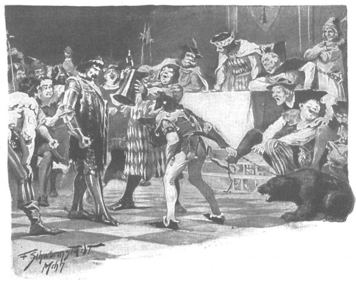
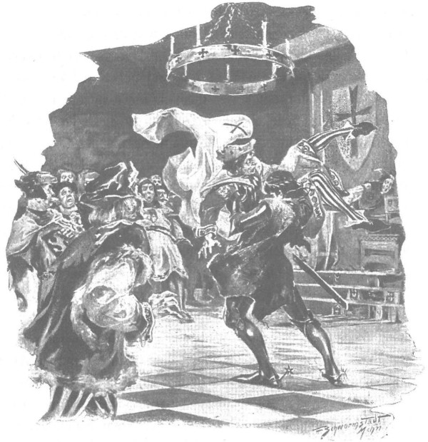
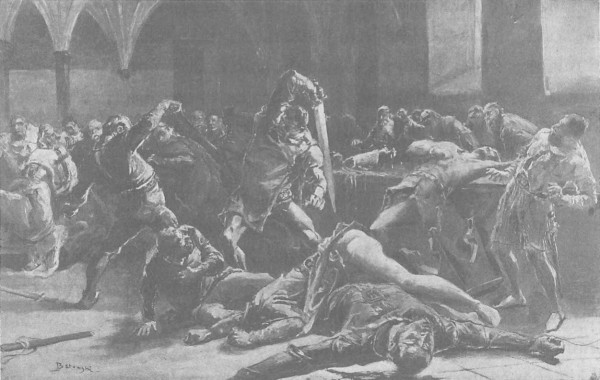

Lọt vào sân trong lâu đài, hiệp sĩ Jurand không biết đi lối nào, vì tên lính bộ đưa ông qua cổng thành đã bỏ về phía chuồng ngựa. Trên đỉnh tường thành tuy vẫn có lính đứng, chỗ một đứa, chỗ thành nhóm, nhưng mặt mũi chúng đều dữ tợn, ánh mắt ngạo mạn, nên vị hiệp sĩ đoán rằng chúng sẽ không chịu chỉ đường cho ông, nếu ông có hỏi thì chúng cũng sẽ chỉ đáp lại bằng những lời chửi rủa thô tục hay nhục mạ mà thôi.
Một số tên lính vừa cười nhạo vừa chỉ trỏ ông, bọn khác lại ném tuyết vào ông như hôm qua. Thấy một cánh cửa có vẻ rộng hơn, bên trên tạc vào đá tượng Chúa Ki-tô trên thập giá, ông bèn bước lại gần, lòng thầm nghĩ nếu viên lãnh binh và quản thành ở nơi khác thì ắt sẽ có kẻ nhắc ông đã đi lầm lối.
Quả vậy. Khi ông Jurand bước lại gần, thì hai cánh cửa đột ngột mở tung ra, xuất hiện một gã trai đầu nhẵn thín như tu sĩ nhưng lại mặc áo dài như dân thường. Gã cất tiếng hỏi:
- Có phải ngài là hiệp sĩ Jurand trang Spychow chăng?
- Chính ta.
- Ngài lãnh binh thánh thiện lệnh tôi dẫn đường cho ngài. Xin mời theo tôi.
Gã dẫn ông qua một hàng hiên lớn xây hình vòm cuốn, bước về phía bậc tam cấp. Đến đó gã dừng bước, đưa mắt nhìn ông lần nữa rồi lại hỏi:
- Ngài không mang theo người vũ khí tùy thân đấy chứ? Tôi được lệnh phải khám người ngài.
Hiệp sĩ Jurand giơ cả hai tay lên trời để gã dẫn đường có thể trông rõ cả người ông, rồi đáp:
- Hôm qua ta đã nộp cả rồi.
Gã dẫn đường bèn hạ giọng, nói như thì thầm:
- Vậy xin ngài hãy cố kiềm chế, chớ nổi giận, vì ngài đang nằm trong tay của một thế lực bạo cường đấy.
- Nhưng vẫn trong ý Chúa! - Ông Jurand nói.
Nói đoạn, ông chăm chú nhìn gã trai dẫn đường, và khi nhận ra vẻ gì như thương hại và đồng cảm trên nét mặt gã, ông nói tiếp:
- Này võ đồng, mắt ngươi đầy trung thực. Vậy ngươi hãy trả lời thật những điều ta hỏi nhé.
- Xin ngài hãy hỏi nhanh lên. - Người dẫn đường vội giục.
- Ta đến nộp mình, liệu họ có trả con cho ta không?
Gã trai nhướn lông mày ngạc nhiên:
- Vậy ra con ngài đang ở đây?
- Con gái ta.
- Có phải tiểu thư ở trên tháp canh cạnh cổng thành?
- Phải. Người ta hứa sẽ thả con ta nếu ta tự đến nộp mình.
Người dẫn đường xua tay ra hiệu không biết gì cả, nhưng nét mặt gã lộ vẻ lo lắng và nghi ngờ.
Ông Jurand lại hỏi tiếp:
- Có đúng là cả Szomberg và Markwart đích thân canh giữ con ta?
- Các vị đồng đạo ấy hiện không có mặt trong thành. Nhưng ngài nên đón tiểu thư trước khi viên lãnh binh Danveld khỏe lại.
Nghe thấy thế, ông Jurand rùng mình, nhưng không còn thì giờ để hỏi thêm gì nữa vì họ đã lên đến tầng trên, nơi ông Jurand sẽ phải giáp mặt viên lãnh binh Szczytno. Sau khi mở cửa cho ông, gã võ đồng lui bước về phía cầu thang.
Hiệp sĩ trang Spychow bước vào một căn phòng rộng nhưng rất tối, những phiến kính nhỏ bọc trong khung chì để lọt vào rất ít ánh sáng trời, mà ngày mùa đông hôm ấy lại nhiều mây.
Tuy ở đầu phòng đằng kia lửa đang cháy trong lò sưởi lớn, nhưng những súc gỗ chưa khô hẳn khiến ánh lửa không mấy tỏa sáng. Mãi một lúc sau, khi mắt đã quen dần với bóng tối, ông Jurand mới nhìn thấy ở sâu trong phòng có một chiếc bàn với dãy các hiệp sĩ đang ngồi, sau lưng chúng là những viên hộ vệ mặc giáp phục cùng đám bộ binh cũng nai nịt chỉnh tề, trong đám tùy tùng có cả gã hề của tòa thành đang cầm dây xích giữ một con gấu.
Đã có lần ông Jurand từng đụng độ với Danveld, còn gặp hắn hai lần nữa ở triều đình công quốc Mazowsze khi hắn là sứ thần, nhưng từ dạo ấy cũng đã vài năm trôi qua. Dẫu vậy, lại đang ở trong bóng tối, nhưng ông vẫn nhận ngay được hắn, qua thân hình phì nộn, qua vẻ mặt và qua vị trí ngồi chính giữa, trên chiếc ghế có tay, với một cánh tay bó nẹp gỗ đặt trên chỗ tựa. Bên phải hắn là vị hiệp sĩ già nua Zygfryd de Lӧwe thành Insburk, kẻ thù không đội trời chung của cả dân tộc Ba Lan và của riêng ông Jurand trang Spychow. Bên trái là hai đồng đạo trẻ Gotfryd và Rotgier. Danveld cố tình mời chúng tham dự để chứng kiến cảnh ca khúc khải hoàn của hắn trước kẻ thù đáng sợ là ông, đồng thời để chia vui về thành quả của vụ phản trắc mà chúng đã cùng nhau mưu mô và góp sức thực hiện. Giờ chúng ngồi bảnh chọe nơi kia, trong những tấm áo dài bằng dạ mềm màu sẫm, với những thanh kiếm nhẹ đeo bên sườn, đầy sung sướng, tự mãn, ngạo mạn và khinh khi nhìn ông Jurand, như nhìn một kẻ yếu thế đã bị chinh phục.
Im lặng kéo dài, bởi chúng muốn được ngắm con người mà chúng từng kinh sợ, lúc này lại đang phải đứng trước mặt chúng, đầu cúi gục, vai khoác chiếc bao tải hành xác, với vỏ gươm rỗng buộc lủng lảng trên cổ bằng sợi dây thừng.
Hẳn chúng muốn cho nhiều người được trông thấy cảnh tượng nhục nhã của ông, bởi qua các cửa thông với những phòng khác, ai nấy ra vào tự do, và căn phòng ấy chứa đầy quá nửa là những kẻ mặc giáp phục. Tất thảy đều thích thú ngắm ông Jurand, lớn tiếng bàn tán, chuyện trò và nhận xét về ông. Trông thấy chúng, tự nhiên ông lại thấy lòng được cổ vũ, bởi ông thầm nghĩ: “Nếu Danveld không định giữ lời hứa, chắc hắn chẳng cho mời đến ngần kia nhân chứng.”
Danveld chợt phẩy tay, những lời trò chuyện lắng đi. Hắn ra hiệu cho một viên hộ vệ, gã này tiến đến, tóm chặt sợi thừng buộc quanh cổ, kéo ông tiến lên mấy bước, lại gần chiếc bàn.
Danveld đưa mắt đắc thắng liếc những kẻ có mặt, cất tiếng:
- Các ngươi hãy nhìn xem, sức mạnh của Giáo đoàn đã chiến thắng sự tà ác và kẻ ngạo mạn kia.
- Cầu Chúa cho luôn được thế! - Những kẻ có mặt đồng thanh nói.
Im lặng lại bao trùm, Danveld quay lại nhìn người tù:
- Như một con chó dại, mày đã từng bao phen cắn xé Giáo đoàn, vì vậy Chúa khiến mày phải đứng đây trước mặt chúng tao như một con chó, với sợi dây thừng thắt cổ, cầu xin ân sủng và lòng thương hại.
- Lãnh binh, xin chớ so tôi với loài chó, - ông Jurand bảo, - bởi nói như thế ông sẽ làm nhục những kẻ đã từng tỷ thí với tôi và đã gục ngã dưới tay tôi đấy.
Những lời ấy làm dậy lên tiếng xuýt xoa trong hàng ngũ bọn Đức mình đầy giáp phục, không rõ sự kiên cường trong câu nói làm chúng nổi giận hay sự đúng đắn của lời ông khiến chúng bàng hoàng.
Không hài lòng với sự xoay vần của câu chuyện theo chiều hướng ấy, viên lãnh binh gầm lên:
- Các ngươi xem, ngay ở đây mà lão còn dám rắn lòng và ngạo mạn nhổ vào mặt chúng ta.
Ỏng Jurand vươn cả hai tay lên trời, như muốn viện cả trời cao chứng giám, lắc đầu nói:
- Có Chúa chứng giám, lòng tự hào của tôi đã để lại bên ngoài cổng thành rồi. Chúa đã thấy và sẽ phán xử xem khi làm nhục danh dự hiệp sĩ của tôi, các ông có tự làm nhục chính mình chăng. Danh dự hiệp sĩ chỉ có một mà thôi, bất kỳ kẻ nào được vinh hạnh đeo đai cũng đều phải tôn trọng danh dự đó.
Danveld nhíu mày. Nhưng vào lúc đó, gã hề bắt đầu rung loẻng xoẻng sợi xích buộc con gấu, kêu lên:
- Rao giảng! Rao giảng! Một vị chân tu thánh thiện xứ Mazowsze vừa đến! Nghe đây, nghe đây! Rao giảng! Rao giảng!…
Rồi gã quay lại bảo Danveld:
- Thưa ngài! Khi bị gã đánh chuông đánh thức vì kéo chuông quá sớm trước giờ rao giảng, bá tước Rosenheim đã bắt gã phải nuốt sợi dây chuông, hết nút này đến nút khác. Bậc chân tu này cũng đang đeo sẵn một sợi dây thừng trên cổ, xin hãy bắt lão xơi tạm, trước khi kết thúc bài rao giảng kia.
Nói đoạn gã nhìn viên lãnh binh, lo ngại không hiểu câu đùa có đủ sức gây cười không, hay hắn lại ra lệnh quật cho gã mấy hèo vì đã lên tiếng quá sớm. Mỗi khi cảm thấy bị dưới cơ thì các đồng đạo của Giáo đoàn đều nhũn nhặn, nhún nhường, thậm chí luồn lụy xun xoe, song chúng lại chẳng bao giờ biết đến sự chừng mực đối với những kẻ kém thế, vì thế Danveld không những chỉ gật đầu với gã hề để tán thưởng câu đùa mà còn phá lên cười thô lỗ đến nỗi trên mặt mấy viên hộ vệ trẻ thoáng hiện vẻ ngạc nhiên.
- Đừng than vãn là mày bị làm nhục, - hắn nói, - bởi nếu ta có hóa phép biến mày thành chó, thì được làm chó Giáo đoàn vẫn còn hơn là làm cái giống hiệp sĩ chúng mày!
Được thể, gã hề lại hét lên:
- Đem giẻ lại đây, chùi lông cho con gấu của ta, rồi nó sẽ dùng vuốt sắc để chùi lại mõm cho mày!
Nghe câu đó, đôi chỗ vang lên tiếng cười, một giọng nào đó từ sau lưng các tu sĩ đồng đạo thốt lên:
- Mùa hè mày sẽ đi cắt lau sậy trên hồ!
- Và đánh tôm để làm món thịt thối! - Giọng thứ hai tiếp.
Giọng thứ ba lại thêm:
- Còn bây giờ hãy bắt đầu từ việc xua quạ khỏi giá treo cổ! Ở đây chẳng thiếu gì việc.
Bọn chúng ra sức nhục mạ hiệp sĩ Jurand, mới đây còn là người thật đáng sợ với chúng. Dần dần, sự vui vẻ lan ra khắp đám đông tụ tập. Một số tên từ sau bàn len ra, bước đến sát gần người tù, ngắm nghía ông rồi bảo:
- Con lợn độc địa ở Spychow đã bị ngài lãnh binh đánh cho gãy cả nanh, mõm nó đang sùi bọt, muốn húc người lắm, nhưng chịu rồi!
Gã Danveld và các hiệp sĩ Thánh chiến khác, thoạt tiên định biến cuộc hỏi cung thành một thứ phiên tòa oai nghiêm, chợt thấy sự thể xoay thành hướng khác, cũng đứng lên khỏi ghế, cùng những kẻ khác tiến đến gần ông Jurand.
Lão hiệp sĩ Zygfryd thành Insburk không hài lòng với việc đó, nhưng viên lãnh binh đã bảo:
- Rồi ngài sẽ hết nhăn thôi, sẽ còn vui hơn nữa kia!
Và chúng bắt đầu ngắm nghía ông Jurand, bởi quả là dịp hiếm, trước đây các hiệp sĩ hay lính tráng được nhìn ông ở gần đều phải vĩnh viễn nhắm mắt. Một số kẻ thốt lên:
- Lão vạm vỡ thật, dù đang mặc áo lông dưới tấm bao gai. Có thể dùng vỏ đậu khô quấn quanh mình lão rồi dắt đi diễu khắp chợ phiên…
Những kẻ khác bắt đầu lớn tiếng gọi mang bia tới để ngày hôm ấy thêm phần vui vẻ.
Lát sau, những bình đầy bia bắt đầu va nhau lanh canh, và căn phòng tối mờ mờ nồng nặc mùi bọt bia trào ra dưới nắp. Viên lãnh binh vui vẻ thốt lên:
- Thế lại càng hay, để lão đừng nghĩ làm nhục lão là ghê gớm lắm!
Thế là bọn chúng lại sán đến gần, lấy cốc vại bia chạm vào cằm ông mà bảo:
- Mày muốn uống lắm phải không, đồ mèo rừng Mazowsze!
Một vài kẻ đổ bia vào lòng bàn tay rồi vẩy vào mặt ông. Còn ông, một mình giữa bọn chúng, bị réo gào, bị nhục mạ, rốt cuộc, hình như biết mình không thể chịu đựng hơn được nữa, ông bước lại gần lão hiệp sĩ Zygfryd, lớn tiếng kêu thật to để át những tiếng ồn ào đang tràn ngập trong phòng:
- Thề trên khổ hình của Đấng Cứu Thế và sự cứu rỗi linh hồn, hãy trả con cho ta như các ngươi đã hứa!

Một mình ông Jurand đứng giữa quân Thánh chiến, bị réo gào, bị nhục mạ
Vị hiệp sĩ định dùng tay phải túm lấy viên lãnh binh cao tuổi, nhưng lão vội lùi ra, quát lớn:
- Tránh xa ra, thằng nô lệ kia! Ngươi muốn gì?
- Ta đã thả de Bergow, đích thân ta đã tới đây, bởi các ngươi đã hứa sẽ trả con ta đang ở đây.
- Ai hứa với mày? - Danveld hỏi.
- Thề có lương tri và đức tin, chính ngươi, hỡi lãnh binh!
- Mày không có người làm chứng, mà người chứng cũng chẳng ích gì, đây là chuyện lời hứa danh dự.
- Danh dự của chính ngươi! Danh dự của Giáo đoàn! - Ông Jurand kêu lớn.
- Nếu vậy thì con ngươi sẽ được thả! - Danveld nói.
Rồi hắn quay lại nhìn những kẻ đang có mặt và nói:
- Tất cả những gì lão gặp nơi đây chỉ là một trò đùa vô tội, chưa xứng với những hành vi tội ác của lão. Nhưng vì chúng ta hứa sẽ trả lại con gái cho lão nếu lão chịu khấu đầu nhẫn nhục trước chúng ta, nên các ngươi sẽ thấy rằng lời hứa của một Hiệp sĩ Thánh chiến cũng hệt như lời của Chúa, không bao giờ thay đổi. Đứa con gái mà chúng ta giành lại từ tay bọn cướp sẽ được trả tự do ngay bây giờ. Còn lão, sau một thời gian ăn năn hành xác về những tội ác chống lại Giáo đoàn, ta cũng sẽ để lão quay về nhà.
Lời của hắn khiến tất thảy đều kinh ngạc, bởi chúng biết rõ Danveld và mối thù hận từ xưa của hắn với ông Jurand, chúng không ngờ hắn có thể xử sự trung thực như thế. Cả lão hiệp sĩ Zygfryd, Rotgier và đồng đạo Gotfryd đều nhướn mày, nhăn trán ngạc nhiên nhìn hắn. Vờ như không trông thấy những ánh mắt dò hỏi ấy, hắn nói tiếp:
- Ta sẽ phái vệ sĩ đưa con gái ngươi về đến tận nhà, còn ngươi phải ở lại cho đến khi những người đó trở về đây an toàn, và sau khi ngươi đã trả đủ tiền chuộc mạng.
Chính ông Jurand cũng ngạc nhiên, bởi ông đã mất hy vọng rằng sự hy sinh thân mình có thể mang lại điều gì cho Danusia, nên ông nhìn Danveld gần như hàm ơn và nói:
- Chúa sẽ trả công cho ngài, thưa lãnh binh!
- Ngươi hãy biết thế nào là những hiệp sĩ của Chúa Ki-tô! - Danveld nói.
Nghe thấy thế, ông Jurand bảo:
- Cầu ngài được hưởng mọi phần ân sủng của Chúa! Đã lâu tôi không được gặp con, vậy xin hãy cho tôi được gặp mặt và ban phước cho nó.
- Được thôi, nhưng điều ấy phải làm trước mắt tất thảy mọi người ở đây, để họ làm chứng cho đức tin và ân huệ của chúng ta.
Nói đoạn hắn lệnh cho viên hộ vệ tùy tùng dẫn Danusia ra, còn chính hắn thì đến gần hiệp sĩ de Lӧwe, Rotgier và Gotfryd, bọn chúng bắt đầu tranh nhau cật vấn hắn.
- Tôi không phản đối, dù ngài không định thế. - Lão hiệp sĩ Zygfryd nói.
Còn gã hiệp sĩ Rotgier, vốn nổi tiếng can đảm và tàn bạo thì nóng nảy thốt lên:
- Sao lại thế? Không chỉ thả con bé, mà ngài còn định thả cả con chó dữ của quỷ sứ kia, để rồi nó lại cắn trả chúng ta sao?
- Lão còn cắn dữ hơn ấy chứ! - Gotfryd kêu lên.
- Thôi!… Lão sẽ trả tiền chuộc! - Danveld thản nhiên nói.
- Dù cho lão có nộp hết cửa nhà cơ nghiệp, thì chỉ một năm sau là lão sẽ lại kiếm được gấp đôi.
- Tôi không phản đối chuyện con bé, - lão Zygfryd nhắc lại, - nhưng với con sói kia thì nhiều phen các con chiên của Giáo đoàn ta sẽ còn phải khóc.
- Thế còn lời hứa của chúng ta? - Danveld vừa hỏi vừa nhếch mép cười.
- Bữa trước ông nói khác cơ mà…
Danveld nhún vai.
- Các ngài chưa chán à? - Hắn hỏi. - Các ngài còn muốn nữa sao?
Bọn khác thì vây quanh ông Jurand, vì tán thưởng hành động trung thực mà Danveld đã gieo vào lòng những người thuộc Giáo đoàn, nên chúng bắt đầu tự khoe khôn khoe khéo trước mặt ông:
- Thế nào, hiệp sĩ Bẻ Gãy Xương? - Viên tướng chỉ huy toán cung thủ của thành Szczytno hỏi. - Chắc lũ anh em ngoại đạo của ngươi không hành xử như thế với hiệp sĩ Ki-tô chúng ta đâu nhỉ?
- Hẳn ngươi sẽ uống máu chúng ta ngay, phải không?
- Còn chúng ta thì lấy bánh mì để đáp trả hòn đá của mi…
Ông Jurand không thèm để ý đến sự ngạo mạn lẫn phỉ báng trong những lời chúng nói - trái tim ông đang trào dâng, hàng mi ông đang ướt lệ, nghĩ rằng chỉ chốc lát nữa thôi sẽ được nhìn thấy Danusia con ông; ông còn được gặp con quả là nhờ lòng ân của chúng, vì vậy nhìn bọn người đang nói với vẻ cam chịu, lát sau ông thốt lên:
- Vâng! Vâng! Tôi cũng hay đối xử khá nặng tay với các ông, nhưng mà… tôi không bao giờ phản trắc.
Đúng lúc ấy, ở đầu phòng đằng kia có ai đó kêu lên: “Cô gái được đưa đến rồi!”, và khắp phòng chợt im lặng. Bọn lính rẽ ra hai bên, tuy chưa một tên nào được thấy mặt cô gái con ông Jurand, và tận lúc ấy thậm chí nhiều đứa trong bọn chúng vẫn chưa hề biết có nàng ở trong thành, bởi Danveld giấu rất kín hành vì của hắn - nhưng những kẻ đã biết danh nàng thì lúc này thì thầm báo cho những người khác về vẻ xinh đẹp khác vời của nàng. Vì vậy mọi cặp mắt đều hau háu ngóng về phía cửa, nơi cô gái sẽ bước ra.
Thoạt tiên là gã hộ vệ, theo sau là nữ tu sĩ mà mọi người ở đây thấy đều quen mặt - chính mụ đã đến lâm cung của quận công, cùng với mụ là một thiếu nữ mặc áo dài trắng, tóc buông xõa, bịt một dải băng ngang trán.
Đột nhiên, tiếng cười rộ lên khắp phòng, ồn như tiếng sấm. Ông Jurand vừa lao đến phía con gái, chợt lùi lại, mặt tái nhợt, thảng thốt nhìn cái đầu nhọn, đôi môi tím tái, đôi mắt vô hồn của cô gái điên mà bọn chúng đang dẫn ra và bảo là Danusia của ông.
- Đây đâu phải con tôi? - Ông kinh hoảng kêu lên.
- Không phải con ngươi? - Danveld cũng kêu lên. - Thề có Thánh Liboriusz xứ Padebornow! Vậy thì hoặc là không phải chúng ta đã giành lại được con ngươi từ tay bọn cướp, hoặc là một gã phù thủy nào đó đã biến đổi mặt mày con bé, chứ khắp thành Szczytno này có còn cô gái nào khác nữa đâu!
Lão hiệp sĩ Zygfryd, Rotgier và Gotfryd liếc mắt rất nhanh lẫn nhau, đầy thán phục sự ranh ma của Danveld, nhưng không một ai kịp lên tiếng, bởi ông Jurand đã gào lên bằng giọng khủng khiếp:
- Còn! Còn! Con tôi đang ở thành Szczytno này! Chính tôi đã nghe thấy nó hát, tôi đã nghe đúng giọng con tôi!
Nghe thấy thế, Danveld bèn ngoảnh về phía đồng bọn đang có mặt, nói thản nhiên nhưng dằn từng tiếng:
- Xin các vị có mặt ở đây, nhất là ngài, thưa hiệp sĩ Zygfryd thành Insburk, và các ngài, thưa đồng đạo Rotgier và Gotfryd thánh thiện, hãy làm chứng cho tôi: theo đúng lời thề và lời hứa danh dự, tôi đã trao trả cô gái mà bọn cướp bị chúng tôi đánh tan tác đã bảo rằng đó là con gái của Jurand trang Spychow. Còn nếu không đúng vậy thì đó không phải lỗi chúng tôi, mà chắc hẳn là ý của Đức Chúa, bằng cách ấy Chúa muốn trao lão Jurand này vào tay chúng ta.
Lão Zygfryd cùng hai tên đồng đạo trẻ cúi đầu ra dấu đã nghe thấy và sẽ làm chứng nếu cần. Rồi lần nữa chúng đưa mắt liếc nhanh lẫn nhau - bởi chúng đã thu được nhiều hơn so với dự tính: bắt được ông Jurand, không phải trả con gái cho ông, mà về danh nghĩa vẫn giữ được lời đã hứa. Còn ai được nhiều hơn thế?
Nhưng ông Jurand đã quỳ sụp xuống, viện tất cả các thánh tích thiêng liêng ở thành Malborg, viện cả xương cốt và thanh danh của hai cụ thân sinh, cầu xin Danveld trả lại cho ông đứa con rứt ruột đẻ ra, chứ đừng hành động như một kẻ lừa đảo, một tên phản trắc, nuốt trôi những lời đã thề, đã hứa. Giọng ông chất chứa bao nỗi tuyệt vọng và đầy chân thật, khiến một số người bắt đầu đoán trong chuyện này hẳn có điều man trá, còn những kẻ khác cho rằng hẳn một lão phù thủy hắc ám nào đó đã làm thay đổi dung mạo cô gái.
- Chúa đang dõi theo trò phản trắc của ngài đó! - Ông Jurand kêu la. - Thề trên tử thương của Đấng Cứu Thế, thề trên giờ khắc lâm chung của ngài, hãy trả con lại cho tôi!
Ông nhổm lên, cồng lưng lại, lê về phía Danveld, như thể định ôm đầu gối hắn, mắt ông rừng rực một ngọn lửa điên cuồng, giọng ông lạc đi, chất chứa nỗi đau đớn, âu lo tuyệt vọng hòa lẫn sự đe dọa. Nghe những lời chỉ trích mình lật lọng và phản trắc ngay trước mặt tất cả mọi người, Danveld bắt đầu phập phồng đôi cánh mũi, và rốt cuộc cơn thịnh nộ như ngọn lửa bừng lên trên mặt hắn. Muốn giày xéo tột cùng người cha bất hạnh, hắn cũng bước lại bên ông, cúi xuống ghé sát vào tai ông, rít lên qua hai hàm răng nghiến chặt:
- Nếu ta có trả con cho mày - thì chỉ trả khi nào nó có con với ta mà thôi!
Nhưng cũng đúng lúc ấy, ông Jurand gầm lên một tiếng vang to như bò tót rống, túm chặt lấy người Danveld nhấc bổng lên không. Khắp phòng vang lên tiếng kêu kinh hoàng: “Xin đừng giết!” - rồi tấm thân viên lãnh binh bị một sức mạnh khủng khiếp quăng đi, đập mạnh xuống sàn đá, khiến sọ vỡ vụn, óc tóe ra, bắn cả lên người lão Zygfryd và Rotgier đang đứng cạnh đấy.
Ông Jurand nhảy ngay đến bên tường, nơi treo những thứ khí giới, chộp lấy một lưỡi gươm dùng được cả hai tay, rồi như một cơn lốc lao vào bọn Đức đang chết điếng vì kinh hãi.
Vốn là những kẻ quen với chiến chinh, tàn sát và máu, nhưng vì đang quá bàng hoàng, nên ngay cả khi nỗi sững sờ qua rồi, chúng cũng chỉ biết lùi bước và trốn chạy, như một đàn cừu chạy trốn chó sói - con sói mà chỉ cần một cú xọc nanh cũng đã đủ chết người. Cả phòng vang động tiếng kêu la kinh hoảng, tiếng chân chạy thình thịch, tiếng bình vại đổ vỡ loảng xoảng, tiếng rú của lũ võ đồng, tiếng rống của con gấu vừa giằng khỏi tay gã hề và đang cố trèo lên khung cửa sổ cao, cùng những tiếng kêu tuyệt vọng đòi khí giới, khiên mộc, kiếm cung. Rốt cuộc các thứ vũ khí cũng lóe sáng và mươi mũi gươm giáo nhọn hoắt chĩa về phía ông Jurand, song ông chẳng chút nao lòng. Như đã hóa điên, ông lao thẳng vào chúng, và nơi đó diễn ra một trận chiến đấu man dại, chưa từng thấy, giống một cuộc tàn sát hơn là một trận đấu. Đồng đạo trẻ hăng máu Gotfryd là kẻ đầu tiên xông vào chắn đường ông Jurand, nhưng chỉ bằng một nhát gươm nhanh như chớp ông đã chém phăng cả đầu lẫn cánh tay và một bên vai hắn. Tiếp theo sau, gục ngã dưới tay ông là viên quan chỉ huy toán cung thủ và viên quản thành von Bracht, cùng gã người Anh Hugues - kẻ không hiểu thật rõ chuyện gì đang xảy ra, thấy thương hại ông Jurand và nỗi khổ hình mà ông phải chịu, mãi đến sau lúc Danveld bị giết gã mới kịp rút vũ khí ra. Bọn khác thấy sức khỏe kinh thiên động địa và sự say máu của hiệp sĩ, bèn dồn lại thành cụm để cùng nhau chống cự, nhưng cách ấy chỉ càng mang lại hậu quả thảm hại hơn mà thôi. Tóc dựng đứng trên đầu, mắt điên cuồng hung tợn, cả người tắm trong máu và khạc ra máu, vị hiệp sĩ như con thú sổng chuồng mê mải vung những đường gươm kinh hoàng chém, chặt, phang vô hồi vào cái khối người dày đặc kia, khiến xác chết như ngả rạ trên mặt sàn nhà đẫm máu, chẳng khác gì cơn bão tung hoành quật đổ cả đám cây lớn cây con. Bọn chúng kinh hoàng, tưởng như vị hiệp sĩ kinh khủng xứ Mazury này có thể một mình chém giết hết bọn chúng, và cũng giống hệt như đàn chó đâu có sủa nhặng xị cũng chẳng thể nào giết nổi con thú đơn thương độc mã nếu không có bàn tay xạ thủ, cả bọn quân tướng người Đức đầy mình giáp phục này cũng chẳng thể đương đầu với sức mạnh và sự cuồng nộ của ông, đánh nhau với ông chỉ mang lại cho chúng cái chết không sao tránh khỏi.

Ông Jurand túm chặt lấy người Danveld, nhấc bổng lên không
- Tản ra! Bao vây lão! Đâm đằng sau lưng! - Lão hiệp sĩ Zygfryd de Lӧwe gào lên.
Bọn chúng bèn chạy tản ra khắp phòng, hệt như đàn sáo ngoài đồng tan tác khi con chim ưng mỏ cong từ trên trời lao vút xuống, song chúng không làm sao vây bọc nổi ông, bởi trong cơn say chiến đấu, ông không tìm chỗ tự vệ mà lại đuổi chúng chạy vòng quanh các bức tường, kẻ nào bị ông đuổi kịp - kẻ đó gục ngã như bị sét đánh trúng. Nỗi tủi nhục, niềm tuyệt vọng, hy vọng tiêu tan biến thành khát vọng đòi nợ máu, hình như khiến cho sức lực bẩm sinh vốn đã kinh người của ông chợt tăng lên gấp chục lần. Thanh gươm mà ngay cả những tên Đức khỏe mạnh nhất cũng phải cầm hai tay, thì ông chỉ sử dụng một tay mà vẫn nhẹ như lông vũ. Ông không tìm sự sống, không tìm sự cứu rỗi, thậm chí cũng không cần chiến thắng, ông chỉ cần trả thù, như ngọn lửa hừng hực, như dòng sông cuồn cuộn khi đã phá vỡ đập chắn, sẽ mù quáng tàn phá hết thảy những gì cản đường - ông là kẻ tiêu diệt mù quáng và kinh khủng, giật tung, bẻ vụn, giày xéo, giết sạch và bóp chết những mạng người.
Bọn chúng không thể sát thương ông từ phía lưng, vì ban đầu chúng không có cách nào chạm tới ông, và những tên lính tầm thường thậm chí không dám tiến lại gần ông phía lưng vì hiểu rằng nhỡ ông quay lại thì không một sức mạnh thế nhân nào có thể cứu chúng thoát chết. Những kẻ khác thì kinh hoàng táng đảm khi nghĩ một người đàn ông trần thế không thể gây ra ngần kia cái chết, rằng không phải chúng đang đánh nhau với một người trần, mà là một sức mạnh siêu nhiên nào đó đã nhập vào thân xác kia.
Lão hiệp sĩ Zygfiryd cùng đồng đạo Rotgier lao lên hành lang, chạy dọc tên hàng cửa sổ cao lớn của căn phòng, gọi thêm người đến cứu viện, và nấp sau lưng bọn chúng để giữ thân, còn bọn mới tới thì đùn đẩy nhau chen lấn trên các bậc thang chật hẹp, muốn mau lên thật cao, để từ bên trên tìm cách sát thương người đại lực sĩ kia, người mà chúng không có cách nào đương đầu đối mặt. Rốt cuộc, bọn chúng đóng chặt cánh cửa dẫn lên cái tầng gác dành cho dàn đồng ca, và chỉ còn mỗi mình ông Jurand ở lại phía dưới. Từ hành lang vang lên những tiếng kêu vui mừng như chào đón một trận chiến thắng, và những chiếc ghế đẩu nặng trịch bằng gỗ sồi, những ghế băng và cả giá cắm đuốc bằng kim loại tới tấp lao vào người vị hiệp sĩ đơn độc. Một vật ném trúng trán ông, ngay trên lông mày, khiến máu túa xuống mặt ông. Cùng lúc đó, những cánh cửa ra vào đồ sộ được mở tung ra, bọn bộ quân cứu viện ùa vào phòng đông như nêm cối, vũ trang lăm lăm những ngọn giáo dài, họa kích, rìu, nỏ, lao, đồng, gậy, dây thừng và đủ các thứ khí giới khác mà chúng đã nhanh tay vớ được.
Ông Jurand cuồng nộ đưa tay trái lên gạt máu trên mặt để khỏi che mất mắt, dồn hết sức lao vào đám đông quân lính ấy. Trong phòng lại một lần nữa vang lên những tiếng rú, tiếng rên, tiếng sắt va loảng xoảng, tiếng nghiến răng trèo trẹo và tiếng kêu la kinh hoàng của những kẻ bị tử thương.

Ông Jurand dồn hết sức lao vào đám đông quân lính